Digital Wallet
1 million TPS wala digital wallet — Redis sharding se shuru karke 2PC, TC/C, Saga, phir event sourcing + CQRS, mmap/RocksDB se single-node speed, Raft se durability, aur sharded Raft groups pe distributed transactions. Ledger, idempotency aur replayability ka sabse deep chapter.
Introduction
Payment platforms ka wallet service users ko app ke andar funds rakhne deta hai — baad mein withdraw, goods/services pe kharch, ya doosre wallet users ko transfer. Wallet-to-wallet transfer normal payment rails se fast aur sasta hota hai (paisa platform ke ledger ke andar hi move hota hai, bank tak nahi jaata).
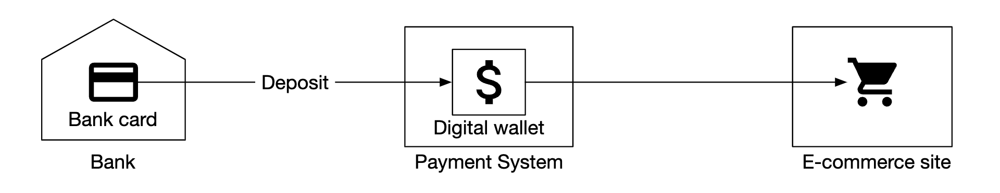
Step 1: Requirements aur scope
- Sirf wallet-to-wallet balance transfers.
- 1M TPS.
- Transactional guarantees kaafi.
- Correctness prove karni hai — reconciliation sirf discrepancy batata hai, root cause nahi. Isliye data ko shuru se replay karke history reconstruct kar sakein (reproducibility).
- Availability 99.99%.
- FX out of scope.
Back-of-the-envelope
Cloud RDBMS node ≈ 1,000 TPS. 1M TPS → 1,000 nodes; aur har transfer ke do legs (debit + credit) → effectively 2M TPS. Design goal: per-node TPS badhao taaki nodes kam hon.
| Per-node TPS | Nodes (2M ops) |
|---|---|
| 100 | 20,000 |
| 1,000 | 2,000 |
| 10,000 | 200 |
Step 2: API
POST /v1/wallet/balance_transfer
from_account, to_account,
amount (string — precision loss nahi),
currency,
transaction_id (idempotency key)
-> { "status": "success", "transaction_id": "01589980-2664-11ec-9621-0242ac130002" }Step 2a: In-memory sharding (Redis)
map<user_id, balance> Redis mein; ek Redis node 1M TPS nahi jhel sakta → partitions:
String accountID = "A";
int partitionNumber = 7;
int myPartition = accountID.hashCode() % partitionNumber;String.hashCode() negative ho sakta hai → % negative partition dega (ArrayIndexOutOfBounds ya galat routing). Use Math.floorMod(accountID.hashCode(), n). Aur modulo hashing mein partitions badhane pe almost saari keys move hoti hain — consistent hashing ya fixed virtual slots (Redis Cluster ke 16384 slots) better.ZooKeeper partitions ka count aur Redis node addresses rakhta hai; wallet service stateless hai, horizontally scale.
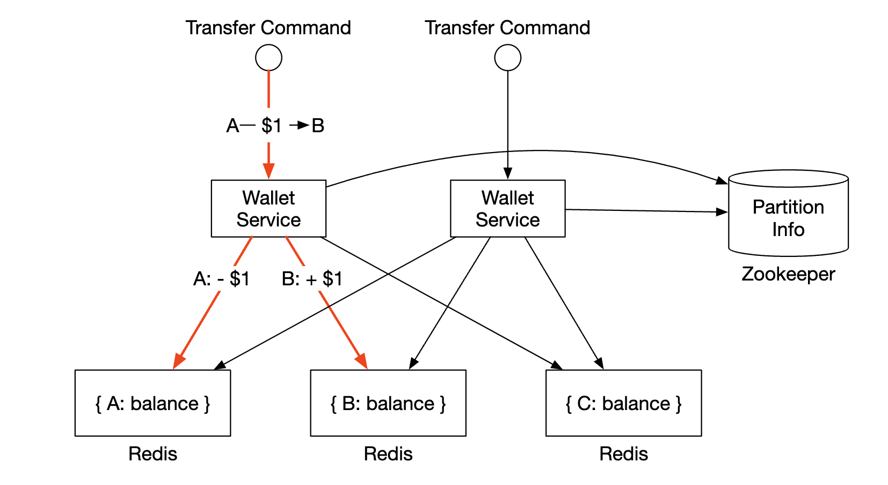
Scale mil gaya, lekin atomicity nahi — aur Redis by default durable bhi nahi.
Step 2b: Distributed transactions — 2PC
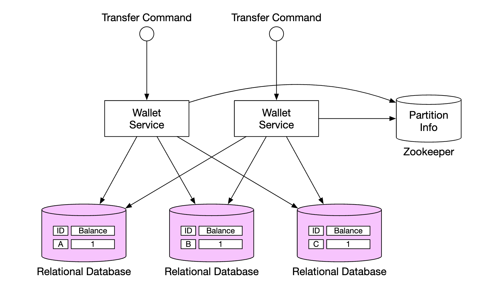
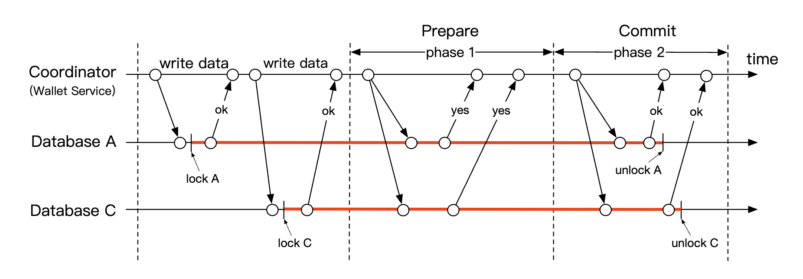
- Coordinator normal reads/writes karta hai multiple DBs pe.
- Commit se pehle sabko prepare; sab "yes" → commit; koi "no" → abort.
- ❌ Lock contention (locks dono phases tak). ❌ Coordinator SPOF — prepare ke baad coordinator mar gaya to participants locks pakde "in-doubt" baithe rehte hain.
Step 2c: Try-Confirm/Cancel (TC/C)
2PC ka compensation-based variant. 2PC = ek badi transaction; TC/C = do independent local transactions (har phase apna commit).
| Phase | Operation | A | C |
|---|---|---|---|
| 1 | Try | Balance −$1 | Do nothing |
| 2 | Confirm | Do nothing | Balance +$1 |
| 2 | Cancel | Balance +$1 | Do nothing |
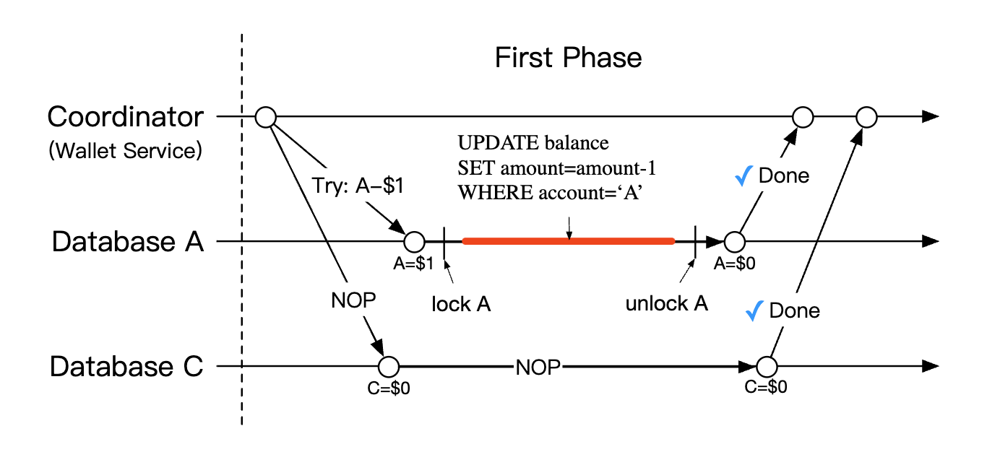
UPDATE balance SET amount=amount-1 WHERE account='A' → unlock A (A: $1 → $0) → Done ✓. C ko NOP → Done ✓. Lock sirf local txn tak (chhoti red line) — 2PC jaisa lamba nahi.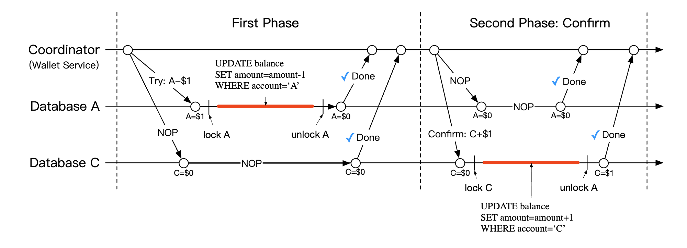
amount=amount+1 WHERE account='C', unlock (C: $0 → $1), Done ✓.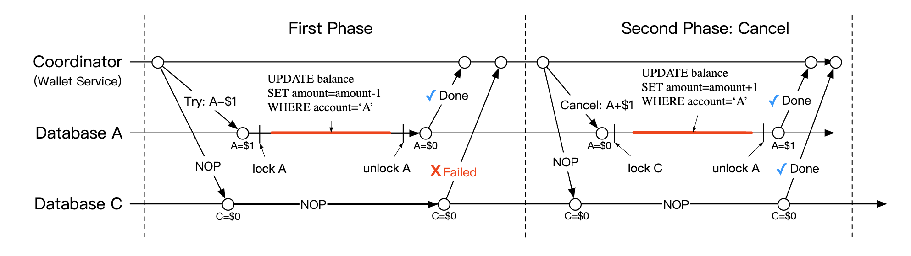
| First phase | Second phase: success | Second phase: fail | |
|---|---|---|---|
| 2PC | Transactions abhi done nahi (locks held) | Commit all | Cancel all |
| TC/C | Saari local txns complete (committed ya cancelled) | Naye txns execute (if needed) | Committed txn ko reverse |
TC/C = "distributed transaction by compensation"; business logic level pe; DB agnostic (bas local transactions chahiye); complexity application mein.
TC/C failure modes
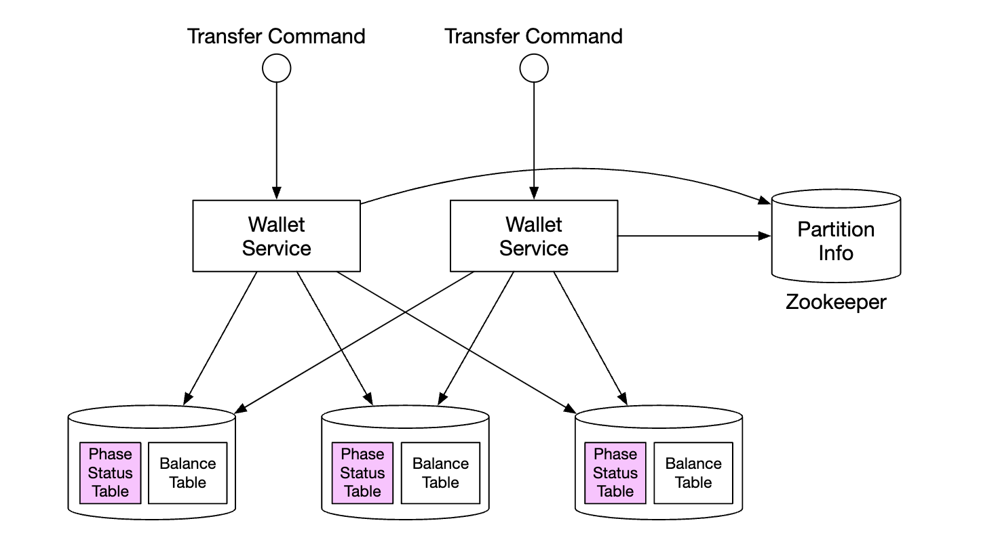
Phase status table: distributed txn ID + content, try status (not sent / sent / response received), second phase name (confirm/cancel), uska status, out-of-order flag.
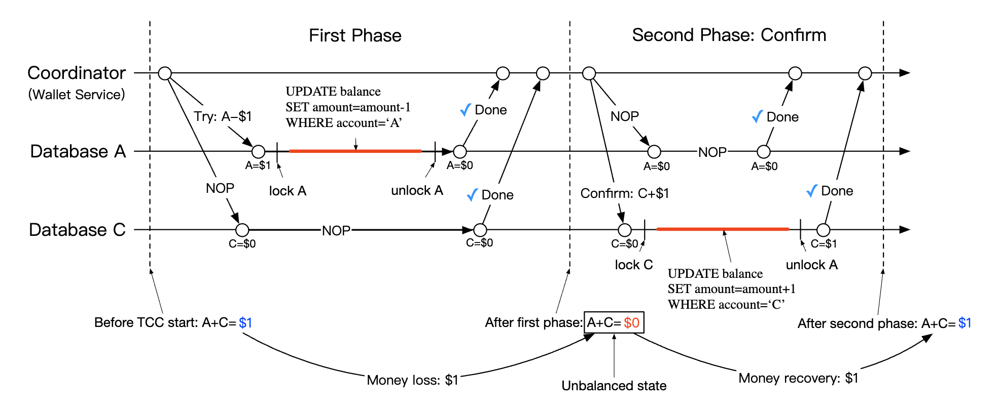
Yeh temporary imbalance theek hai jab tak hum hamesha recover karein aur user beech ki state kharch na kar sake — isliye deduction hamesha addition se pehle:
| Try choice | A | C | Valid? |
|---|---|---|---|
| Choice 1 | −$1 | NOP | ✅ |
| Choice 2 | NOP | +$1 | ❌ C pehle kharch kar sakta hai, phir A fail → paisa create ho gaya |
| Choice 3 | −$1 | +$1 | ❌ do DBs pe atomic nahi bina 2PC ke |
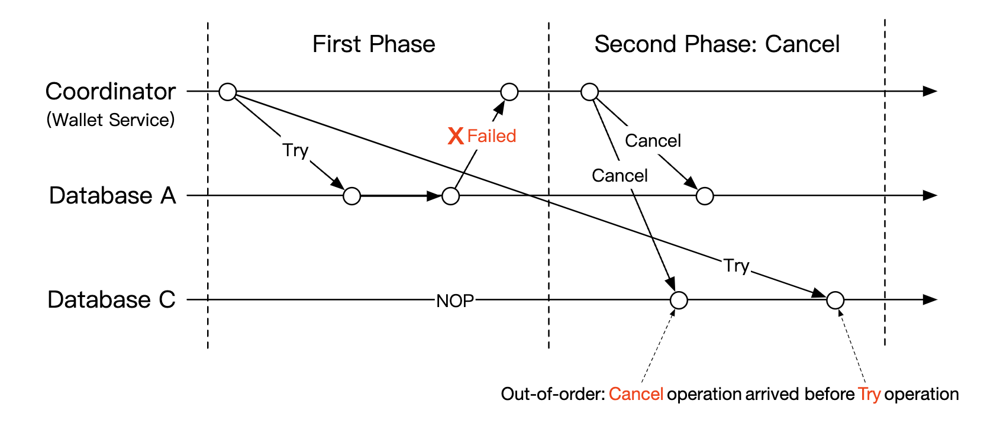
Fix: Cancel aaye aur Try record na mile → out-of-order flag set karo; baad mein Try aaye aur flag set ho → Try reject.
- Idempotency — Try/Confirm/Cancel har ek retry-safe (txn_id + phase pe unique).
- Empty rollback allowed — Try kabhi pahuncha hi nahi aur Cancel aaya → success return karo (kuch reverse karne ko nahi), lekin record rakho.
- Anti-hanging (suspension) — empty rollback ke baad late Try aaye to reject (yahi notes ka out-of-order flag).
available -= 1, held += 1; Confirm = held -= 1 + credit; Cancel = held -= 1, available += 1. Isse user beech ki state kharch nahi kar sakta aur ledger pe hold dikhta hai.Step 2d: Saga
Operations ek sequence mein, har ek apne DB mein independent; first → last; fail hua to compensating operations se ulta rollback.
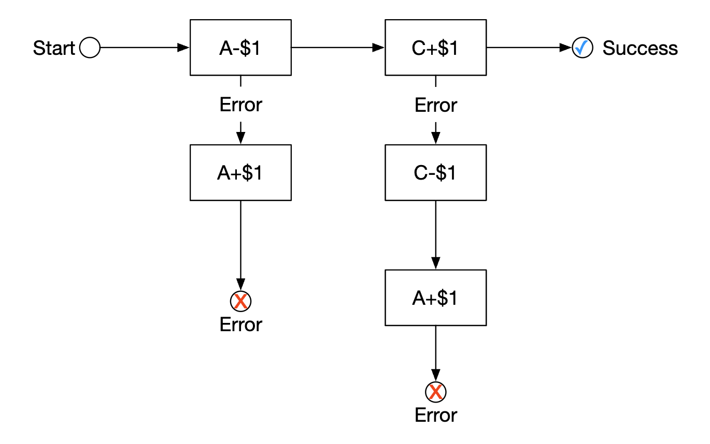
- Choreography: services events subscribe karke apna hissa karti hain — logic bikhar jaata hai.
- Orchestration: ek coordinator order mein instruct karta hai — wallet ke liye preferred.
| TC/C | Saga | |
|---|---|---|
| Compensation | Cancel phase | Rollback phase |
| Central coordination | Yes | Yes (orchestration) |
| Execution order | Any | Linear |
| Parallel | Yes | No |
| Partial inconsistent state visible | Yes | Yes |
| Logic | Application | Application |
Main farak: TC/C parallel ho sakta hai → low latency chahiye to TC/C. Dono mein auditing + replay phir bhi chahiye.
Step 2e: Event sourcing
Auditor ke sawaal: (1) kisi bhi time pe balance kya tha? (2) historical aur current balances sahi hain, kaise pata? (3) code change ke baad logic sahi hai, kaise prove? → Event sourcing.
- Command: intended action ("A se B ko $1"). Global order chahiye → FIFO queue. Fail ho sakta hai, randomness/IO ho sakti hai; 0 ya zyada events produce karta hai.
- Event: fact jo ho chuka ("A se B ko $1 transfer hua"). Immutable, ordered (FIFO).
- State: events ka result — account → balance KV.
- State machine: commands validate karta hai, events apply karta hai. Deterministic — external IO ya randomness nahi.
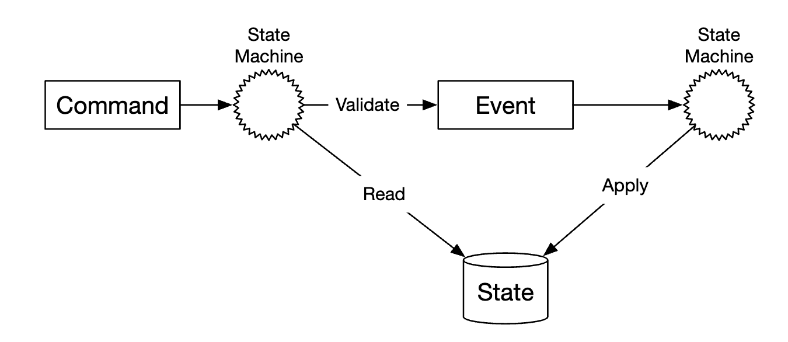
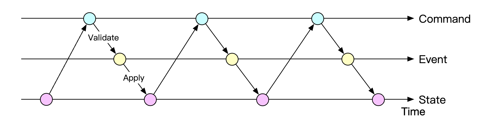
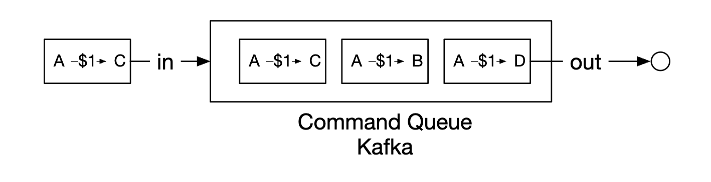
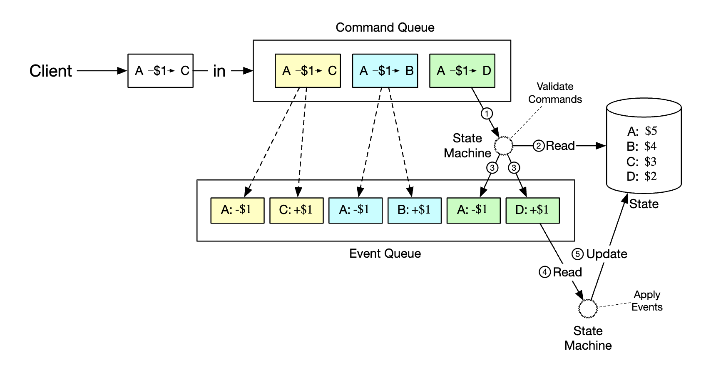
Fayda: reproducibility. Events immutable + state machine deterministic → kisi bhi point tak replay = exact same state.
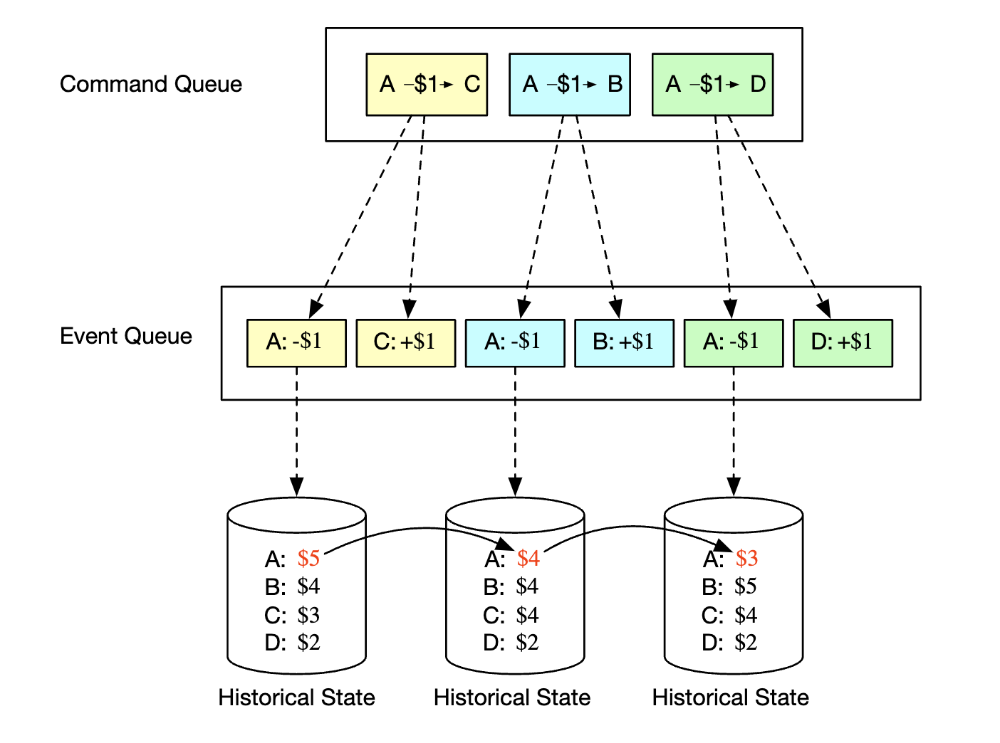
- Kisi time ka balance → us point tak replay.
- Sahi hai? → shuru se recalc karke compare.
- Code change sahi? → naye aur purane code ko same events pe chalao, results identical hone chahiye.
CQRS
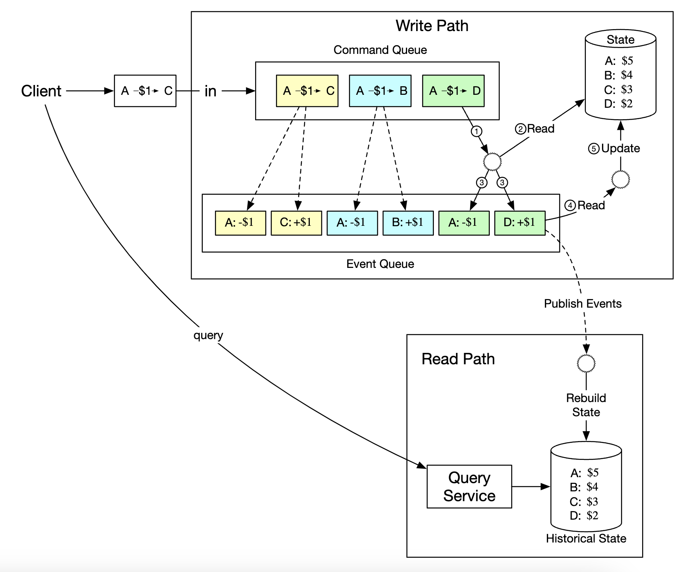
- Determinism: state machine mein
System.currentTimeMillis(),UUID.randomUUID(), HashMap iteration order, floating point — sab replay ko non-deterministic banate hain. Timestamp/IDs command ke saath aaye (sequencer assign kare), money BigDecimal/long. - Idempotent commands:
transaction_idko state ka hissa banao (processed set / per-account last-seq). Duplicate command → no new events, same result. - Event schema evolution: events hamesha ke liye hain → versioned events + upcasters; event kabhi edit nahi.
- Corrections: galat transfer = compensating event (reversal), jaise double-entry ledger mein. Event sourcing aur double-entry ek hi philosophy hain — append-only facts, derived balances.
- Kafka as event store? Command/event transport ke liye badhiya, lekin per-account event stream load karna (random access by aggregate id) Kafka mein efficient nahi; isliye EventStoreDB/Axon Server/DB-table + Kafka for distribution common hai.
Step 3a: High-performance event sourcing
1M TPS ke liye external Kafka + external DB ka network hop bhi mehenga. Optimizations:
- Commands/events local disk pe append (sequential — HDD pe bhi fast).
- Recent commands/events memory mein cache.
mmapse dono ek saath — file ko memory mein map karo.
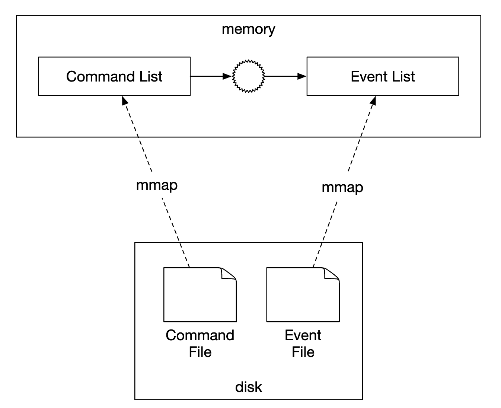
State bhi local: SQLite ya RocksDB (LSM tree, write-optimised; reads caching se).
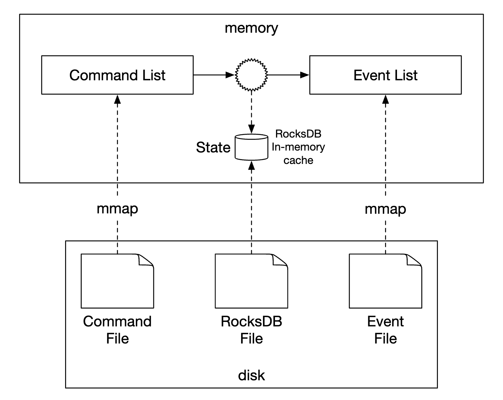
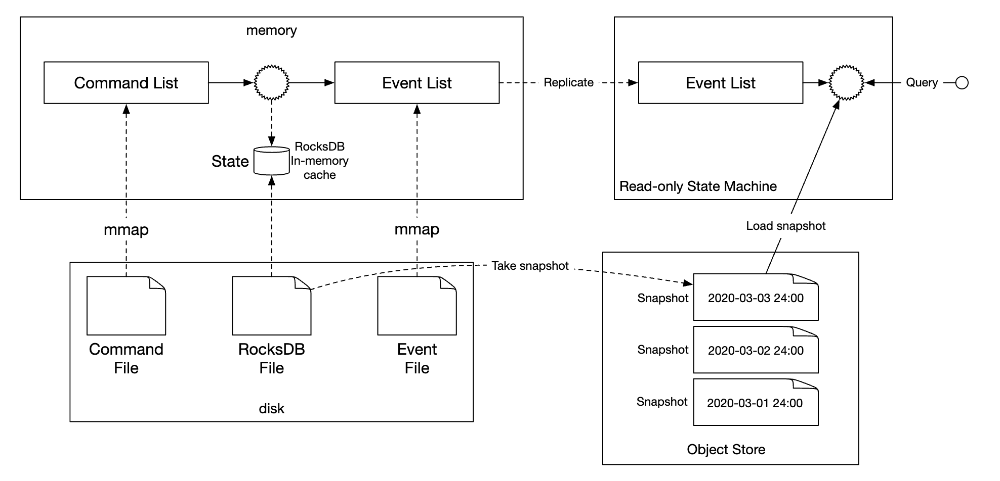
Snapshots (HDFS/object store) se har baar zero se replay nahi karna padta.
Step 3b: Reliable — Raft replication
Local storage = stateful = node gaya to data gaya. Kya replicate karna hai?
- State aur snapshots events se regenerate ho sakte hain.
- Events commands se regenerate nahi — commands non-deterministic (validation us waqt ke state pe depend karti hai, external IO).
- → Sirf event list ko highly reliable banao: no data loss + sab replicas pe same order.
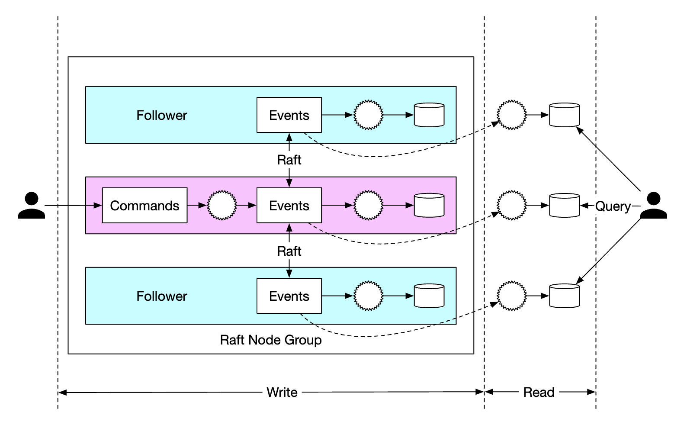
Leader active, followers passive; leader gaya to follower leader banta hai; majority up = system up (3 nodes → 1 failure, 5 → 2).
Step 3c: Distributed event sourcing
Limitations: (1) ek Raft group ki capacity limited → shard + distributed txns, (2) CQRS mein client ko result jaanne ke liye poll karna padta hai.
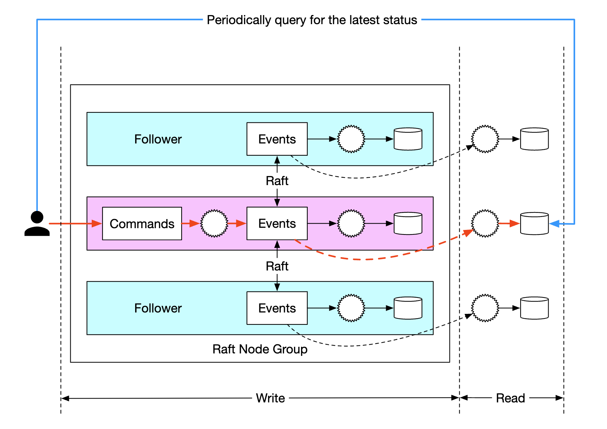
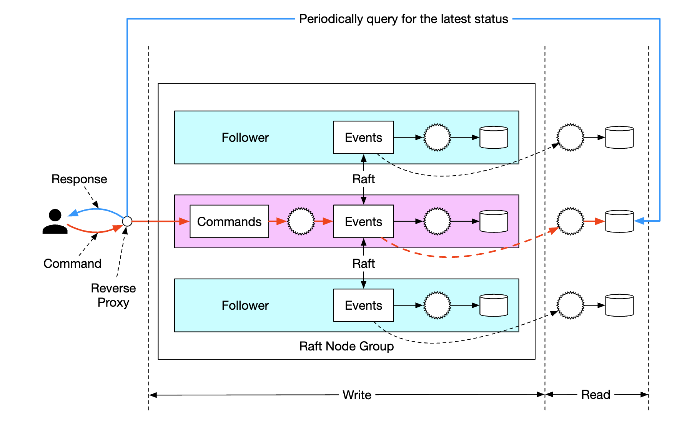
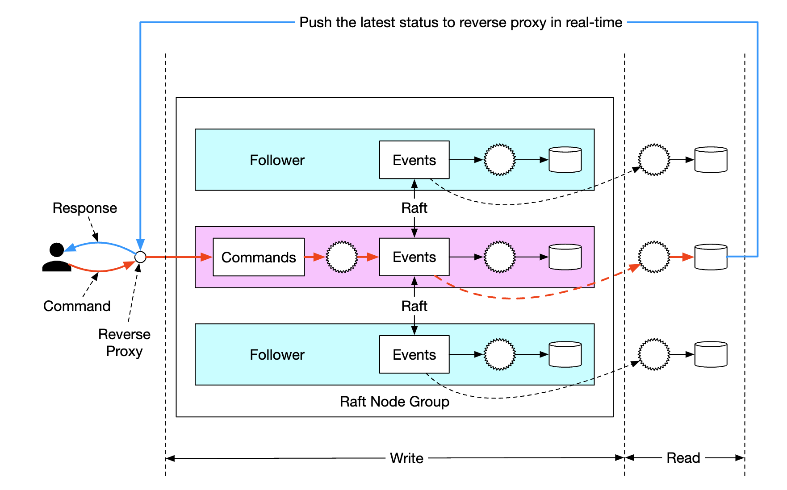
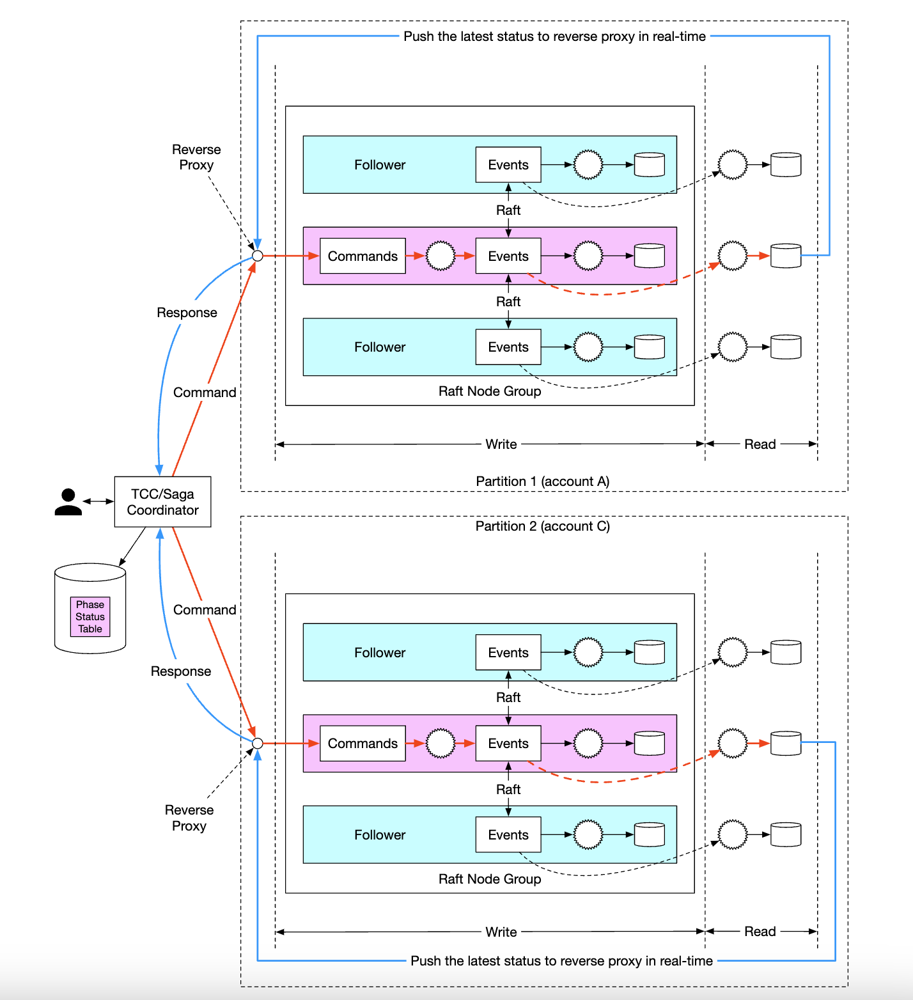
Ek transfer ki poori lifecycle
- User A Saga coordinator ko distributed txn bhejta hai:
A-1,C+1. - Coordinator phase status table mein record banata hai.
- Partitions decide karta hai.
- Partition 1 ka Raft leader
A-1command leta hai, validate karta hai, event banata hai, Raft se replicate. - Event read state machine tak sync, woh coordinator ko response push karta hai.
- Coordinator success record karke next op
C+1. - Same flow Partition 2 pe.
- Coordinator op 2 success record karke client ko result.
Step 4: Wrap up — design evolution
- In-memory Redis → durable nahi.
- Relational DBs + distributed txns (2PC / TC/C / Saga).
- Event sourcing → auditable.
- External DB + queue → slow.
- Local file storage (append-only, mmap) + caching.
- Durability ke liye Raft replication.
- CQRS + reverse proxy (push) for lifecycle.
- Multiple Raft groups + TC/C/Saga orchestration.
- Numbers: 1M TPS × 2 legs = 2M ops; 1k TPS/node → 2,000 nodes. Goal = per-node TPS.
- Naive Redis → "atomic nahi, durable nahi".
- 2PC vs TC/C vs Saga table; TC/C mein "deduct first", out-of-order/empty rollback.
- Requirement "prove correctness/replay" → event sourcing (command/event/state/state machine) + CQRS.
- Perf: local append-only + mmap + RocksDB + snapshots; reliability: Raft on event log only (kyun only events — determinism argument).
- Scale: sharded Raft groups + coordinator; push via reverse proxy.
Follow-up questions
- Q: Same partition mein dono accounts (A aur B same shard)?
- Ek hi state machine mein ek command = do events atomically — distributed txn ki zaroorat nahi. Isliye related accounts ko co-locate karne ka partitioning (e.g. same user ke sub-wallets) bada win hai.
- Q: Snapshot corrupt hua to?
- Purana snapshot + zyada events replay; snapshots ka checksum + periodic "replay from zero" verification job.
- Q: Command duplicate aaya (client retry)?
- transaction_id state machine ke state mein tracked; duplicate → koi naya event nahi, previous result return.
- Q: Reconciliation phir bhi chahiye?
- Haan — internal consistency event sourcing deta hai, lekin bank/PSP (external) ke saath recon alag (Ch26).
Key Takeaways
- Wallet transfer = do legs; atomicity across shards hi asli problem.
- 2PC: locks + coordinator SPOF. TC/C: do local txns, parallel, compensation. Saga: linear, compensation.
- Hamesha deduct before add; TC/C ko idempotent + empty-rollback + anti-hanging banao.
- Event sourcing = immutable events + deterministic state machine → replay, audit, code-change verification.
- CQRS: write path (commands → events) aur read path (projections) alag; push se real-time.
- Perf: local append-only log + mmap + RocksDB + snapshots (LMAX style).
- Sirf event log ko Raft se replicate karo; state derive hota hai.
- Scale: sharded Raft groups + TC/C/Saga coordinator (jo khud bhi durable ho).